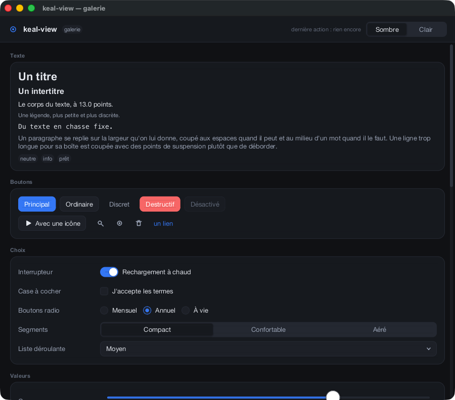
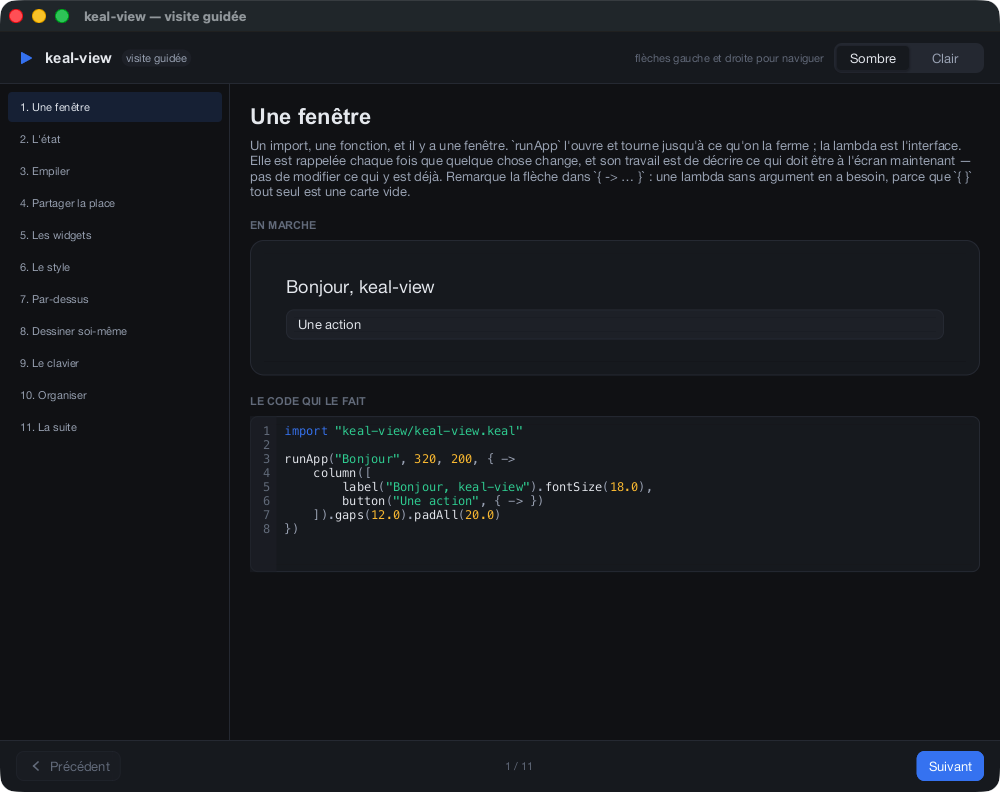
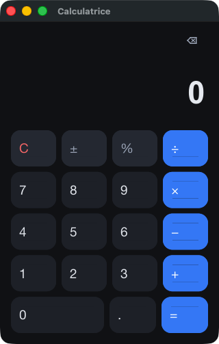
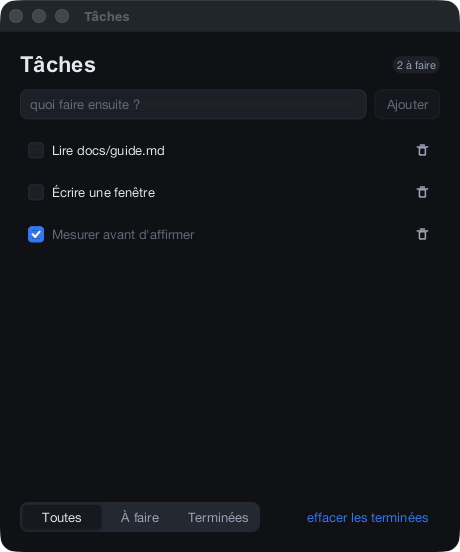

Galerie
Cinq programmes, photographiés par eux-mêmes. Chacune de ces images a été faite par le programme qui s'y trouve, avec --snapshot, qui dessine une image dans un fichier puis s'arrête — donc ce que vous regardez est la sortie du rasteriseur et pas une capture d'écran de celle-ci.

L'atelier —
Un espace de travail à panneaux : une liste de fichiers, un éditeur de code, un panneau de propriétés avec son onglet d'aperçu, et un terminal. L'agencement est un arbre binaire de feuilles et de coupes. L'éditeur et le graphique de couverture sont deux vues
examples/studio.kealUn espace de travail à panneaux : une liste de fichiers, un éditeur de code, un panneau de propriétés avec son onglet d'aperçu, et un terminal. L'agencement est un arbre binaire de feuilles et de coupes. L'éditeur et le graphique de couverture sont deux vues
custom — on leur remet une toile découpée et on les laisse dessiner.
La galerie de widgets —
De la documentation qui tourne : tous les widgets qui existent, sur une seule page défilante. Si un contrôle n'y est pas, il n'existe pas.
examples/gallery.kealDe la documentation qui tourne : tous les widgets qui existent, sur une seule page défilante. Si un contrôle n'y est pas, il n'existe pas.

La visite guidée —
Une visite de keal-view écrite en keal-view. Onze chapitres, chacun montrant une chose en marche à côté du code qui l'a faite — un compteur vivant, un curseur vivant, un dock vivant dans lequel on peut traîner un panneau.
examples/tour.kealUne visite de keal-view écrite en keal-view. Onze chapitres, chacun montrant une chose en marche à côté du code qui l'a faite — un compteur vivant, un curseur vivant, un dock vivant dans lequel on peut traîner un panneau.

Une calculatrice —
Le tout de bout en bout — l'arithmétique, le clavier numérique, le clavier — en environ deux cents lignes. Le pavé est cinq rangées de quatre.
examples/calculator.kealLe tout de bout en bout — l'arithmétique, le clavier numérique, le clavier — en environ deux cents lignes. Le pavé est cinq rangées de quatre.

Une liste de tâches —
De l'état, une liste reconstruite depuis lui, et un champ qui garde son curseur d'insertion quand on supprime une ligne au-dessus — parce que les lignes ont une clé, et que l'identité est ce à quoi l'état retenu s'accroche.
examples/todo.kealDe l'état, une liste reconstruite depuis lui, et un champ qui garde son curseur d'insertion quand on supprime une ligne au-dessus — parce que les lignes ont une clé, et que l'identité est ce à quoi l'état retenu s'accroche.
Comment les images sont faites
Tout programme keal-view accepte --snapshot sans qu'on le lui ait appris. Il n'a besoin d'aucun écran, ce qui est la façon dont le framework est vérifié en intégration continue sur trois plateformes, et la raison pour laquelle ces images ne peuvent pas s'écarter en douce de ce que fait le code.
build/studio --snapshot frame.bmp 2 # one frame to a file, then exit build/studio --snapshot frame.bmp 2 900 1900 # …at a size of your choosing build/studio --window-id /tmp/id # write its own window number out